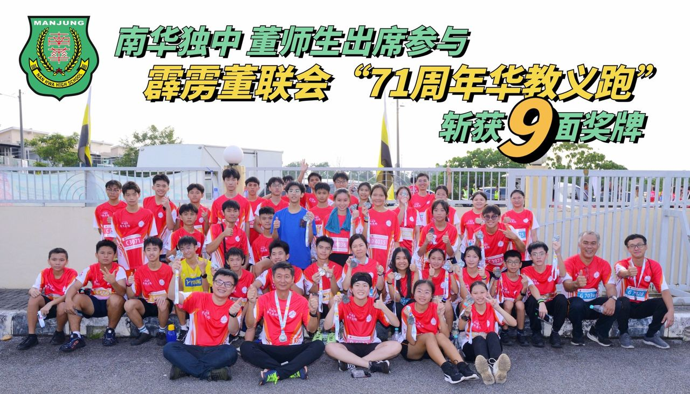
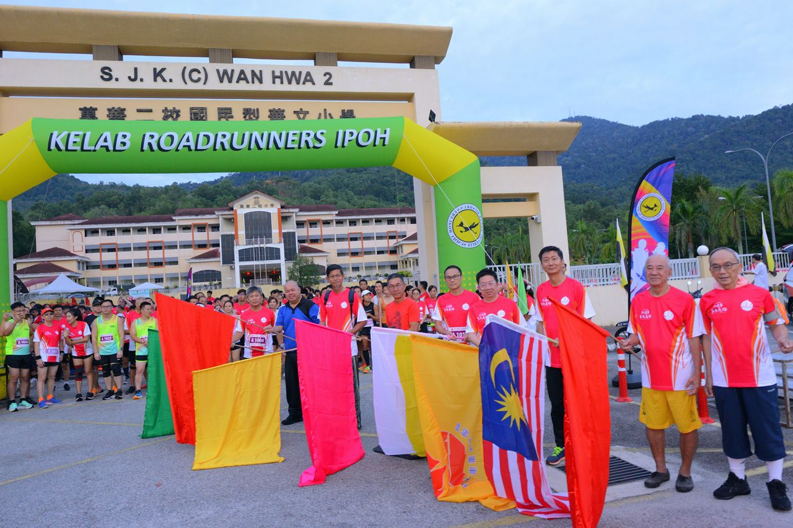
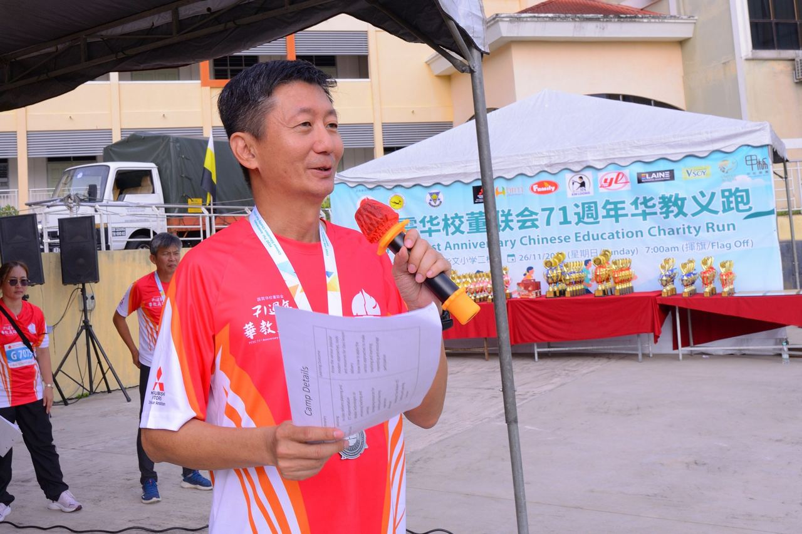
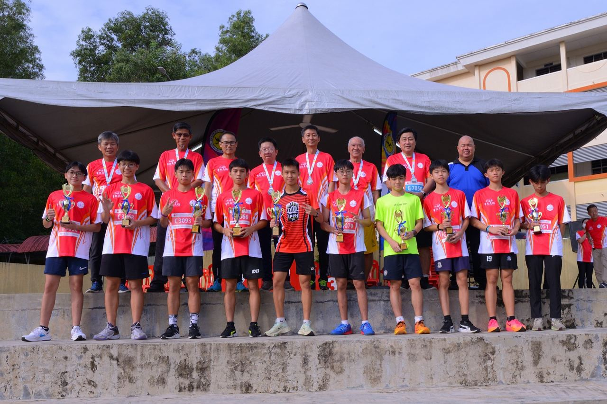
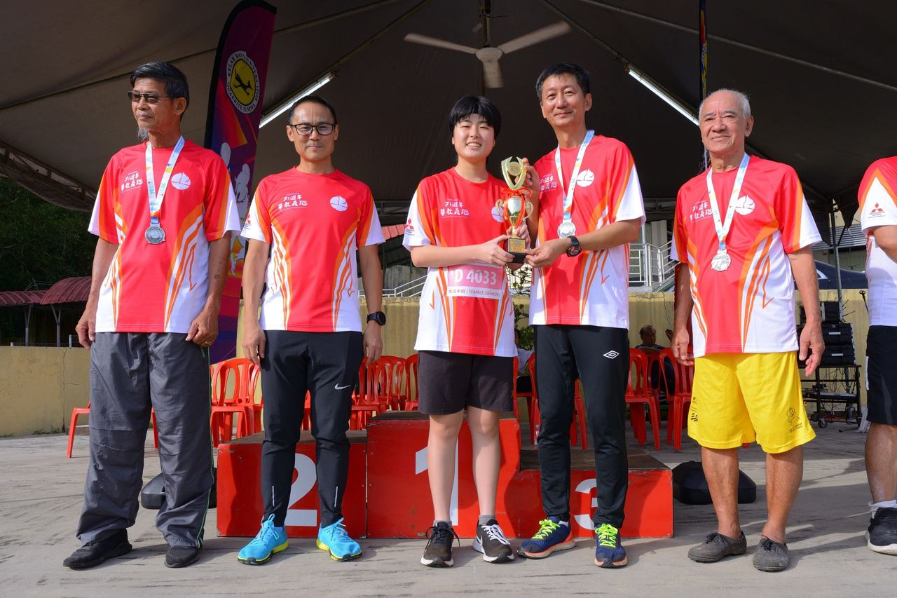
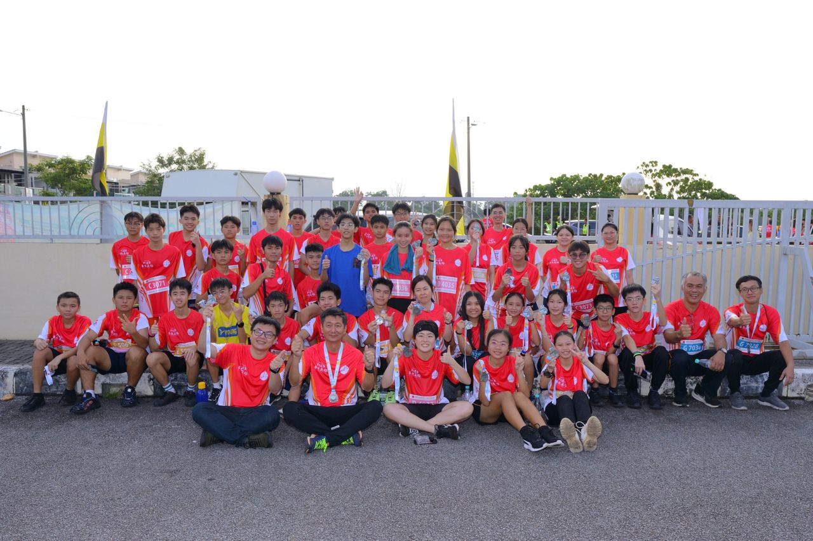
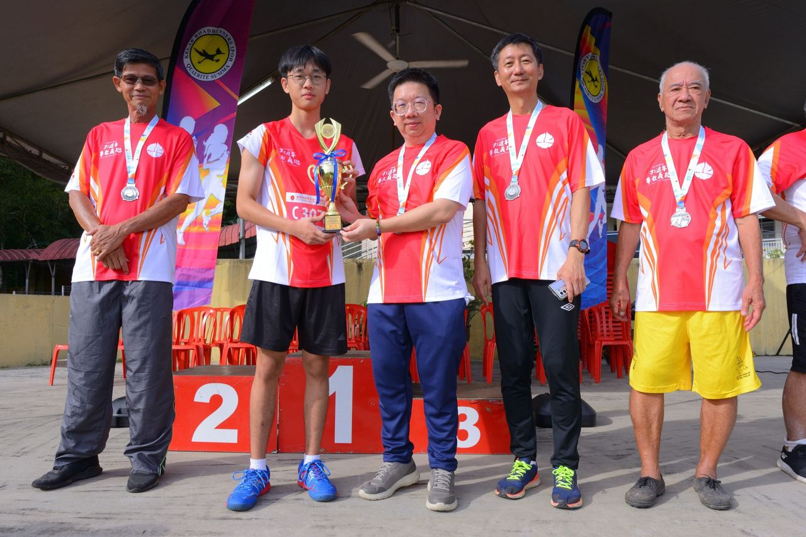

南华独中董师生出席参与
南华独中董师生出席参与
霹雳董联会“71周年华教义跑”
斩获9面奖牌
本校于日前共派出约50位师生代表出席参与由霹雳董联会在怡保万里望万华二小主办“71周年华教义跑”，并成功斩获9面奖牌，凯旋归来。
此义跑活动旨在以实际行动来展现华教的生命力，本校师生皆十分认可此活动的积极正向的意义，尤其抵达义跑现场后，发现义跑的参与者从四面八方而来，感到特别鼓舞与振奋人心。
组别分别有小学组、初中男女子组、高中男女子组、公开男女子组以及公益组。除了公益组，其他组别将会录取10名优胜者。
以下为南华独中学生得奖名单：
初中男子组
01.林宇恒 第7名
02.程必宏 第8名
03.张梓乐 第10名
初中女子组
01.蔡斯芮 第10名
高中男子组
01.麦嘉晋 第1名
02.蔡昀佑 第8名
03.颜抆凯 第10名
高中女子组
01.何芯晴 第7名
02.张诗静 第8名
感谢由董联会的陆翰文理事暨玲珑Salon Photo Studio老板拍摄，霹雳董联会提供的照片。
#霹雳董联会 #71周年 #华教义跑
#南华独中 #曼绒 #实兆远






